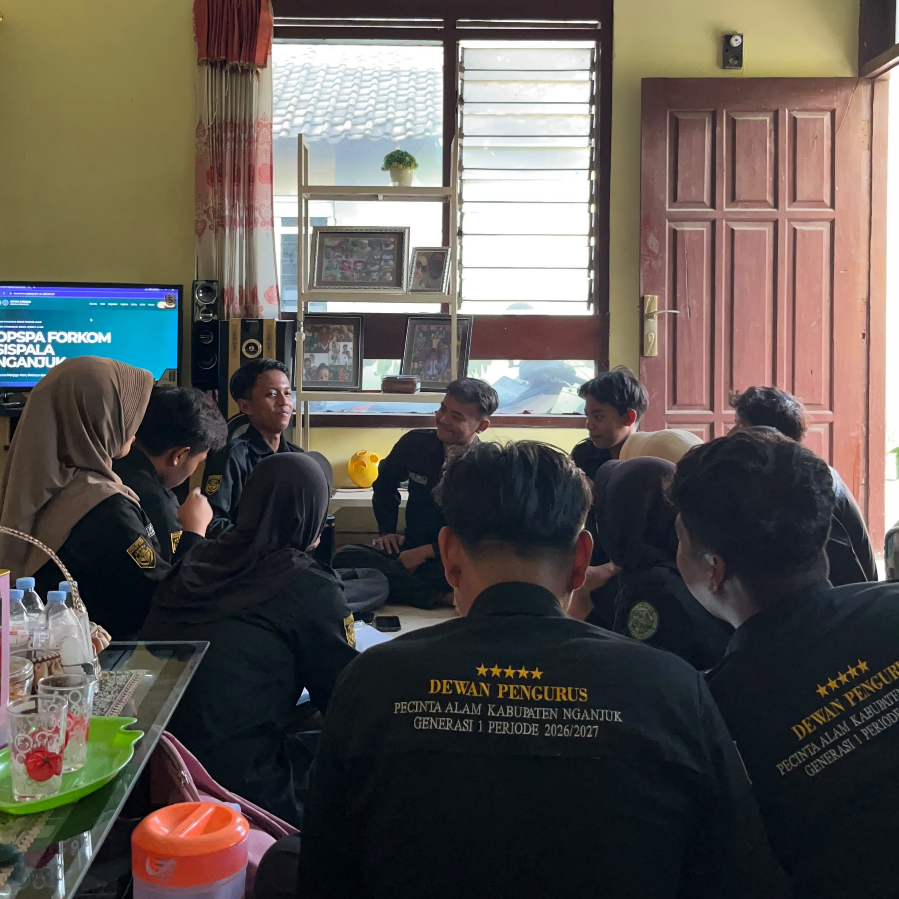

muskab-4.jpg4 OKTOBER 2026 - Jl. M.T. Haryono, NO.III Nganjuk
Musyawarah Kabupaten (MUSKAB) IV DPSPA Forkom Sispala Nganjuk
Pengetapan & Pengesahan dokumen-dokumen Organisasi; AD/ART, Profil, Sejarah, SK, Hingga Lembar Program Kerja DPSPA Forkom Sispala Nganjuk.